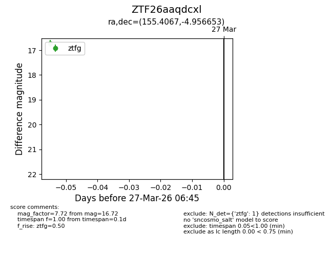
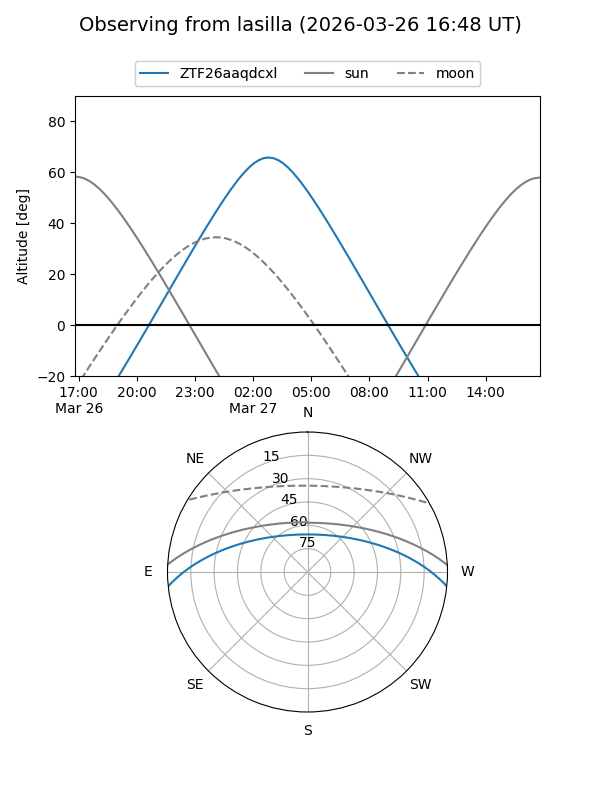
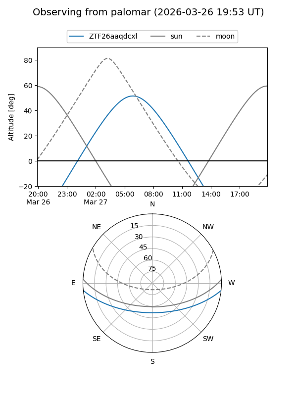

ZTF26aaqdcxl
Target ZTF26aaqdcxl at 2026-03-27 06:48
Aliases and brokers:
FINK: link
Lasair: link
ALeRCE: link
alt names
ZTF26aaqdcxl (ztf,fink_ztf)
Coordinates:
equatorial (ra, dec) = 155.4067,-4.95665
equatorial (HMS+DMS) = 10:21:37.61,-04:57:23.95
galactic (l, b) = (248.7685,+41.64255)
Flags:
Photometry:
last ztfg=16.72
1 ztfg detections
Lightcurve

Visibility


Additional plots